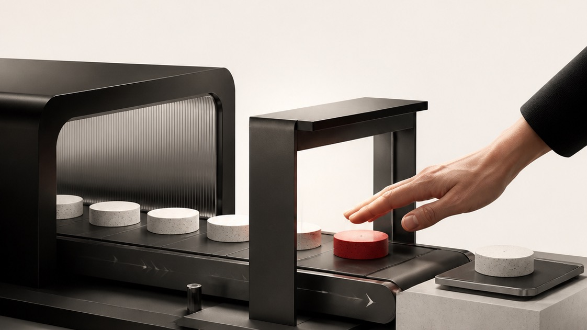

You're not stuck on what it does. You're stuck on what it touches.
You stopped me mid-demo to say exactly that, and you were right to. You told me you're stuck on three things: the connecting, the AI policy, and the approvals. You'd said it earlier on the phone and I made you say it twice.
So this document is those three things. There's no capability tour in it.
You gave me the clearest version of this fear I've heard from anyone. Someone writes to you about a bereavement, or a staff member says something about another staff member, and you're picturing that summarised into a client folder, inferred from in a meeting note, and sitting in a shared Drive where it becomes a problem you didn't create.
I answered you with a story about one of my own clients, which on reflection described the system doing the exact thing you were worried about. That was a bad answer to a good question, so let me give you the real one, in three parts.
One. It isn't reading your mailbox. There's no standing process sweeping your email and deciding what's interesting. It reads when you point it at something specific, the way you'd ask a person to go and find one thread. If you never point it at that email, it never sees it.
Two. Before anything connects, we write down what it must never keep. Named topics, named people, whole categories. Personal circumstances of anyone, staff grievances, anything medical, anything you'd call HR. That instruction sits in the operating brief it reads before every single task, and it applies to the notes it writes, not just to what it says back to you.
Three. We decide up front where its notes are allowed to land, and that place gets the same restrictions as the source. The failure you described isn't really the system reading something. It's a new file appearing somewhere looser than the email it came from. So we name the destination before there's anything to put in it.
And the honest part, because you'll ask and you should: this is a design discipline, not a solved technical problem. Nothing in the industry automatically detects that a summary has picked up something sensitive. Anyone telling you that's handled is selling you something. What makes it safe is deciding the rules while the system is empty, which is precisely why session one connects nothing at all.
What I heard from you

Correct me on any of this before we start.
-
You've decided not to connect anything, on purpose
Someone in your circle has a connected setup saving eight hours a week, running her own task list off the back of it, and you've watched it and chosen not to follow her. That's not hesitation, that's a judgement about risk you're allowed to make. My job is to change the risk, not to talk you out of the judgement. -
You want to know how it's built, not buy a black box
Your words: you don't mind paying to skip two months of learning, but you're not installing a piece of software and hoping. You coded in 1999. You want to see the architecture, not be reassured about it. That's the whole reason this is taught over four sessions instead of delivered as a product. -
You're carrying other people's data, not just your own
This is the part that makes PN different from most of the people I build for. A leak isn't just embarrassing, it's a client's IP in a competitor's research, and it's a conversation with your insurer. Everything below is written for an agency, not for a solo consultant. -
You already know the first two things you'd build
A proposal builder, and a quality-control checker that reads work before it goes out and holds it to a standard. I only picked up the first one on the call. The second is the more interesting one and I've costed both into session four.
Blocker one · the connecting of things
Here's the thing I answered badly on the call. You asked about connectors, about installing someone's MCP without knowing what you're connecting to, and I told you that Markdown files aren't code and you can read them. That's true and it's about the harmless half. You'd correctly identified the dangerous half.
A connector is a small program that runs on your machine and holds a credential you issued. It doesn't open a tunnel to me or to anyone else. It's the same class of thing as letting a scheduling app into your calendar, except that you can see the whole list, and you turn each one on individually, in front of me, and understand what it reaches before you do.
Nothing gets connected because it came in the box. Every connection is a decision you make in session two, out loud, one at a time.
You asked me straight out whether it works with Google Workspace. I never actually answered.
Yes. Gmail, Calendar and Drive are the most well-trodden connections there are, and they work per account, so you can point it at one mailbox rather than the whole tenant. You issue the credential from your own admin console and you revoke it from the same place, without going through me. We do that revoke together in session two and watch the connection die, so you've seen it work with your own hands before you rely on it.
And the two things you'd find later if I didn't say them now
It can see whatever the account you connect can see. That's the real thing to design around, far more than where anything is hosted, and it's why we scope to one mailbox instead of all of them. And it keeps a plain-text log of its own sessions on your machine, in a known folder, for a number of days you set. I'd rather you heard both from me in a proposal than found them in month two.
Blocker two · the AI policy

You named this on the call and I didn't address it once, which is the biggest miss of the forty-six minutes. You run an agency holding client data. A policy isn't paperwork for you, it's the thing you show a client who asks whether their material goes near AI, and it's what your insurer will want to see.
So it's a deliverable, written in session one, before anything is connected. Not a template with PN's name on it. We write it while the system is empty, because that's the only moment when the rules are a genuine choice rather than a description of what already happened.
Two facts that belong in it, and they're facts rather than policy choices. On a commercial plan your content isn't used to train models and it's held for a short set window, but that turns on which plan you're actually running, because consumer plans are governed differently. It's a setting we check together at go-live rather than assume. And processing does not happen in Australia today. If any of your clients carry contractual Australian residency requirements, that's a real constraint, and I'd rather you knew it now than discovered it in the middle of a client's security review. Both go in the policy either way.
Blocker three · the approvals
The default is read-first. Reading and searching happen freely, because that's the whole point of it. Anything that changes the world outside your machine stops and asks you, every time, and shows you the thing before it does it.
Write access isn't a switch that comes on when you've earned it. It's turned on one capability at a time, when you decide a specific job is worth it. There's no schedule for that and no pressure from me to get there.
The proof is a test, not a promise
At the end of session two we do something I'd want to see if I were you. We deliberately ask it for things it should not be able to reach, a mailbox you didn't connect, a folder outside its scope, a client file you ruled out, and we watch it come back with nothing. Then we revoke a credential and watch that connection die. You get the results written down. It's the only part of any of this that's actual evidence rather than my word.
You already run this model with people
You told me PN gives new hires restricted access and opens it up as the role earns it. That's exactly the shape of this, and it's why I keep saying it's a hire rather than an install. Same instinct, same staging, same reason. The only difference is that this one hands back every key the moment you ask, without a conversation.
Your Mac Mini was the right call
You'd already solved this before we spoke, and I spent a few minutes on the call arguing with you about it. You were right and I'll build to it.
A separate machine, a throwaway Google account, a Canva account with nothing real in it. That's a proper sandbox, and it means you can watch the thing work for a fortnight before a single piece of PN data goes near it. So that's where we start, and the build is designed to move out of it only when you say so.
The two things you'd build first
You named these on the phone. I only engaged with one of them, so here are both.
The proposal builder
From a meeting to a drafted proposal in your format, in your language, with your pricing structure and your terms. You record the meeting, tell it you've had it, and the draft is waiting. It's the most common first build I do and it works well, but it is genuinely worth less than the second one.
The quality-control checker
The one you mentioned in passing and I skipped over. Work gets read against your standard before it goes out. Not a spellcheck: your standard, written down once, applied to every piece anybody produces. For an agency where the output is the product and you can't personally read all of it, this is the higher-value build. I'd do this one first.
Both get built in session four, and the second one is where you take the keyboard and I stop talking. That's the point of the fortnight: you build one properly on your own while I watch, so you're not dependent on me afterwards.
The help desk, since you raised it
You said three of you cover the help desk, that you tried to build something with Gemini, and that you don't want to build it three times. You're right that you shouldn't. The answer isn't three Chiefs of Staff, it's one system and a shared front door. Your Chief of Staff builds a small internal tool your team logs into, holding the intake, the queue and the client lookup, and they use that rather than reaching into your system. A first working version comes together quickly; making it genuinely good takes a few rounds, the way it would with anything your team has to live in. It isn't priced here and it doesn't need to be. It's a thing you'll be able to make yourself once you're through session four.
One correction, before you test it and catch me out
On the call I said you won't need Canva or Harvest anymore. That was me getting ahead of myself. Canva, quite likely, for the document work you're doing in it now. Harvest, I wouldn't count on it, because time tracking and invoicing across a team with real staff is exactly the kind of thing that's worth paying someone else to maintain. You'll cancel some subscriptions. I shouldn't have named that one.
How we do it
Four build sessions and two follow-ups on Google Meet, roughly five hours in total across a fortnight. You share your screen and you drive. I don't touch your machine and I never hold a copy of anything.
-
160 to 90 minutes · nothing connected
Install, and write the policy
You install the folder on the Mac Mini and unpack it, so you see exactly what arrived. Then it interviews you about PN and starts building context. We finish by writing the AI and data-handling policy while it's still empty, which is the only honest time to write it. -
260 to 90 minutes · the connection session
Connect what you choose, then try to break it
One credential at a time, you issuing each one, me explaining what it reaches before you do. Then the negative test: we ask for things it shouldn't reach and confirm nothing comes back, and we revoke a credential and watch it die. You keep the results. -
3About 45 minutes
Driving it properly
The difference between using it and running it. When to let it go and when to make it show you the plan first. Picking the right model, and the trap that makes people think it has got dumber. How to unblock yourself instead of waiting on me. -
4About 45 minutes
The QC checker, then the proposal builder
We build the first one together. Then you build the second one while I watch and keep quiet. That moment, you building something properly unaided, is the actual deliverable of the whole fortnight. -
5Two sessions, after the build
We swap what we've built
Not support calls. We each show the other what we've made since. By then you'll have built things I haven't thought of, which is what happens with people who were writing code in 1999. Both included.
What actually arrives, since you asked
A zip file, and I'd rather give you the exact contents than a summary you'd have to trust. Thirty-four Markdown files, which are the substance: the operating brief, the memory structure, the skills, the gates. Then five short Python scripts that do housekeeping, a couple of CSVs, and a bit of HTML and CSS for the dashboards.
All of it is readable source. Nothing compiled, nothing obfuscated, and the scripts are small enough to read in a sitting before you ever run one. Open every file in a text editor, and you should, because that's how you'll see the architecture rather than take my word for it. Then you say hello to it, and its first job is to learn about your business.
Whenever you get stuck, you just call me
On top of the sessions, through the whole build, if something jams you message me and if I'm free we jump on a screen share and sort it there and then. No ticket and no queue.
And the honest bit about week one
The front of this is the heaviest. Keys, logins, teaching it how PN works, deciding the rules. It thins out fast but it's real work, and there's usually a day in the middle where it frustrates you before it frees you. I've watched that day land on people who then came out the other side, and on at least one who hit a wall and needed me to sit with him through it. Either is normal. I'd rather you heard that from me now than found it on day three and assumed you'd bought a dud.
The rest of your questions
It sits in a folder on your machine and nowhere else. I don't have access to it, I don't hold a copy, and there's no account of mine it reports into. Everything I do with you happens over a screen share where you're the one typing.
Back it up like anything else that matters, and you choose where: Google Drive, GitHub, Time Machine, whatever fits how PN already works. Within a few months that folder is one of the more valuable things you own, so treat the backup seriously from week one.
You asked this directly on the call and I want it in writing rather than remembered. One seat, one installation, yours to run in the conduct of PN's business. That expressly includes work you bill your clients for, and it includes handing your clients whatever you build with it: proposals, dashboards, portals, reports. Those outputs are yours.
The single boundary is the one you guessed yourself: you don't hand on the system itself, or repackage it into something PN sells. That's the part that stays mine. It's clause 6.2 in the agreement, and it's worth reading rather than taking from me here, because an earlier version of that clause was written for solo operators and would have read badly to an agency. You'd have found it. I'd rather fix it than have you find it.
A separate install at the standing price, when you're ready, and not part of this. His job at PN is different from yours, so his should be built for his work rather than cloned from yours.
The layer that joins two of them onto one shared source of truth, with the rules about who can change what and how you avoid two people overwriting each other, is real engineering and I'll scope it properly when we get there rather than guess at it now. My honest advice is do yours, run it for a month, and let the shape of the second one become obvious. It will, and you'll specify it better than I would today.
You didn't ask this, but you might be thinking it, so I'll answer it anyway. I've never written code professionally. What I have is a science background and months of building, breaking and rebuilding this thing daily across two businesses, with the version history and the audit trail to show for it. It's on version 1.4 and the changes are logged.
That's why the architecture is legible instead of clever. It's built by someone who has to be able to read every part of it himself. Given what you said about not wanting to install software you don't understand, I'd argue that's the right background rather than the wrong one, but you'll form your own view in session one when you open the files.
Revoke the credentials from your Google admin console, which kills every connection immediately, then delete the folder. There's nothing of mine to unwind: no account with me to close, and no copy of your material for me to hold or hand back.
To be exact rather than reassuring, because it's the same topic as your bereavement email: anything already sent to the model sits in the vendor's own retention window and runs down on their clock, not on mine. That window is short and it's one of the settings we check at go-live. Deleting the folder ends everything on your side immediately; it doesn't reach back into what has already been processed. Nobody in this industry can offer you that, and I'd rather say so than let you assume otherwise.
The rollback order gets written into your policy in session one, with a name against it, so it exists before anyone needs it.
What it costs
Everything a Chief of Staff should be doing, 127 things in plain English: the build checklist. Everything included in this build: what's included.
-
On signing · $2,750 including GST
Half, which locks your session dates and gets you the folder and your homework the same day. -
Two weeks later · $2,750 including GST
The other half, which falls around the end of the build.
One cost that isn't mine, so you should know it now
You'll need your own paid Claude plan, in PN's name. That's what the system runs on, it's paid to Anthropic rather than to me, and it isn't included in the fee. I mention it because you're the kind of buyer who'd rather see a recurring cost in the proposal than meet it in session one. We'll sort out which plan makes sense for how you'll actually use it before we start.
One seat. A second install for your partner, and the shared layer between them, are separate and deliberately not quoted here.
Sign the agreement, pick your first session.
Signing takes the first payment and locks your dates. Your homework comes the same day, and it's short: where your brand assets live, a couple of proposals you're happy with, and the standard you'd want work held to.
Grab any slot that suits and I'll extend it to the full ninety minutes. If either button plays up, just reply and I'll sort it the same day.
Rodney, ten years of you sending me work is the reason I've written this the way I have. You asked precise questions and got a demo instead, and the honest answer to two of them is that the risk you're worried about is real and gets managed rather than eliminated. I'd rather tell you that than sell past it.
You've already bought the machine and set up the accounts. You're further along than most people are when they sign. The only thing left is the fortnight, and that's the part I'm good at.